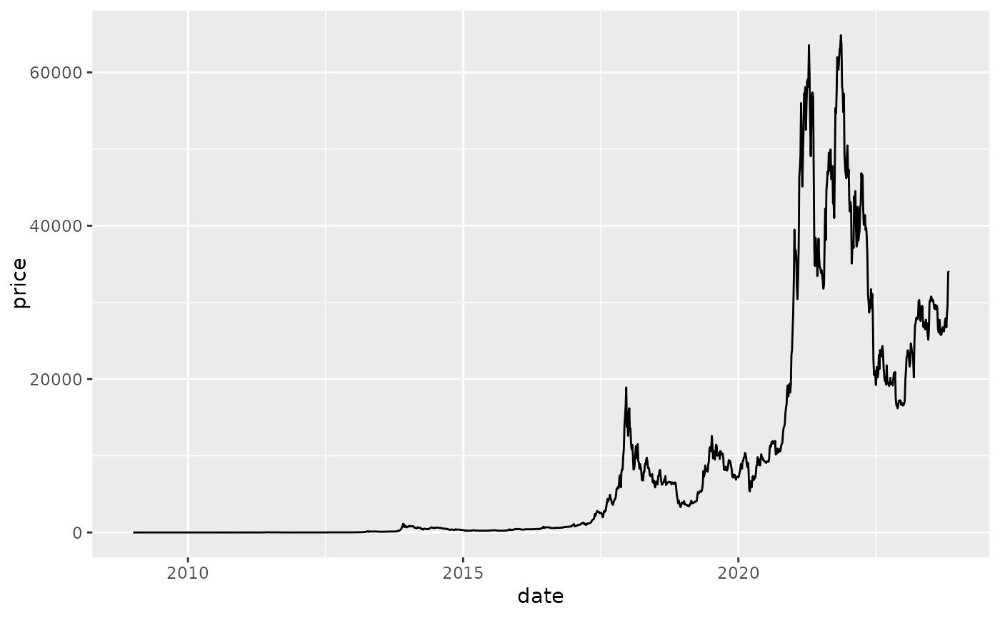
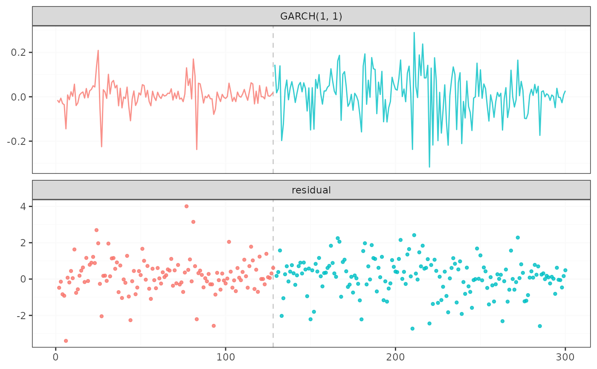

The average USD market price across major bitcoin exchanges.
Format
A data frame with 1354 rows and 2 variables:
- date
POSIXct,POSIXt (TZ: "UTC") from 2019-01-02 to 2023-10-28
- price
The average USD market price across major bitcoin exchanges
Examples
# \donttest{
if (requireNamespace("ggplot2", quietly = TRUE)) {
p <- ggplot2::ggplot(bitcoin, ggplot2::aes(x = date, y = price)) +
ggplot2::geom_line()
print(p)
result <- suppressWarnings(fastcpd.garch(
diff(log(bitcoin$price[600:900])), c(1, 1),
beta = "BIC", cost_adjustment = "BIC"
))
summary(result)
bitcoin$date[result@cp_set + 600]
plot(result)
cp_dates <- bitcoin[600 + result@cp_set + 1, "date"]
ggplot2::ggplot(
data = data.frame(
x = bitcoin$date[600:900], y = bitcoin$price[600:900]
),
ggplot2::aes(x = x, y = y)
) +
ggplot2::geom_line(color = "steelblue") +
ggplot2::geom_vline(
xintercept = cp_dates,
color = "red",
linetype = "dotted",
linewidth = 0.5,
alpha = 0.7
) +
ggplot2::labs(
x = "Year",
y = "Bitcoin price in USD"
) +
ggplot2::annotate(
"text",
x = cp_dates,
y = 2000,
label = as.character(cp_dates),
color = "steelblue"
) +
ggplot2::theme_bw()
}

#>
#> Call:
#> fastcpd.garch(data = diff(log(bitcoin$price[600:900])), order = c(1,
#> 1), beta = "BIC", cost_adjustment = "BIC")
#>
#> Change points:
#> 128
#>
#> Cost values:
#> -328.3151 -324.7008
#>
#> Parameters:
#> segment 1 segment 2
#> 1 0.0005468705 0.0004985193
#> 2 0.5362635868 0.1374093753
#> 3 0.3725827046 0.8052973996

 # }
# }